2022.09 — 2025.06
四川师范大学
硕士广播电视编导
主修课程：广播电视前沿、广告设计学、影视剧创作、新媒体运营、传媒伦理与法规。
参与 2 项国家级社科基金项目；专业排名年级前 3，获一等学业奖学金、优秀志愿者称号，毕业论文与作品获评“双优”。
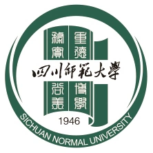
CREATIVE PRODUCER · PRODUCT THINKER
Senior Writer-Director / 高级编导
在内容、影像与 AI 的交汇处，
把一个想法，做成让人记住的作品。
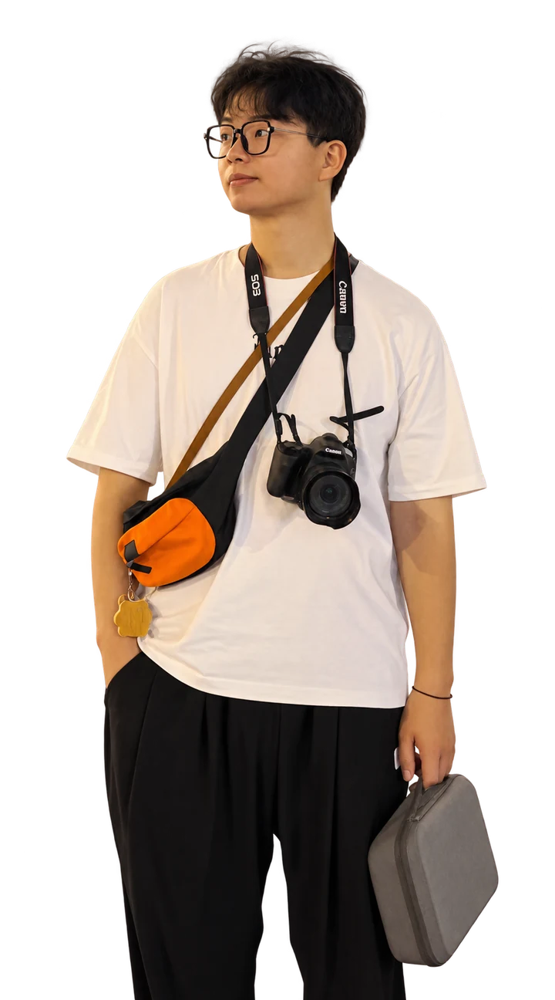
我是付康，一名关注内容表达与项目落地的创作者。做过新闻现场的快速反应，也参与过商业内容从 0 到 1 的完整制作。
我喜欢先听懂问题，再找到值得讲的那一面。无论是一个短片、一组内容，还是一套新的创作流程，都希望它既有清晰的想法，也有真实的温度。
广播电视编导

数字媒体艺术
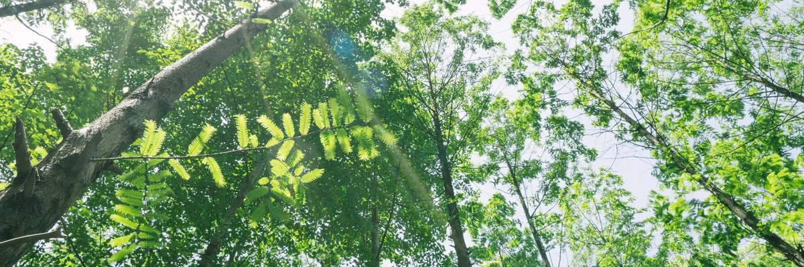
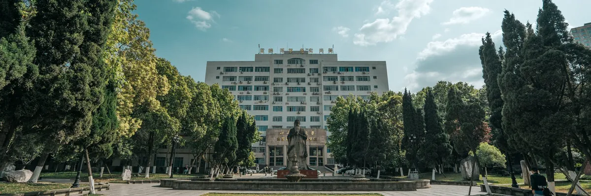
在校园里，练习观察世界的方式。从选题、沟通到交付，
每一次合作都让方法更完整。
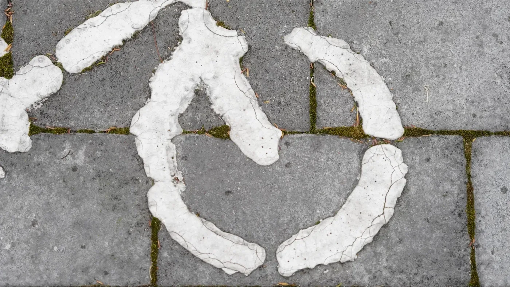
DOCUMENTARY · 01聚焦第 16 届全国大学生广告艺术大赛公益主题设计，以车轮为意象串联生活中的交通工具。获 2024 年第 16 届全国大学生广告艺术大赛全国三等奖。
扫码可观看作品详情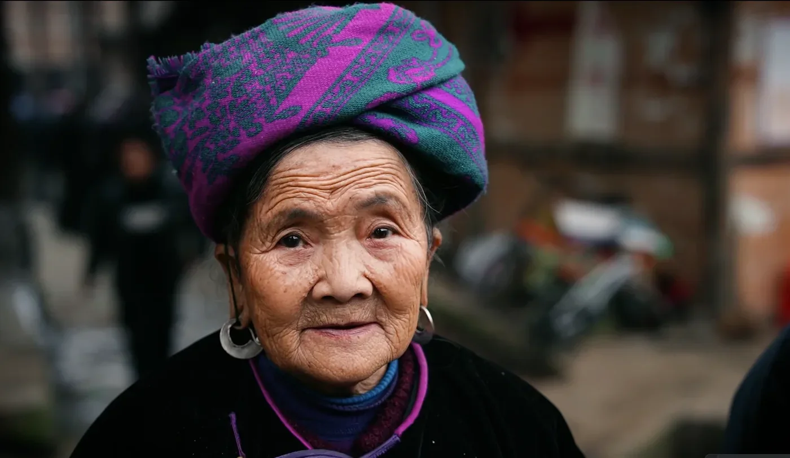
DOCUMENTARY · 02聚焦贵州省从江县侗族村落的日常生活。获第十五届蓝桥杯全国软件和信息技术专业人才大赛视觉艺术设计赛全国总决赛二等奖，以及第十二届未来设计师全国高校数字艺术设计大赛四川赛区三等奖。
扫码可观看作品详情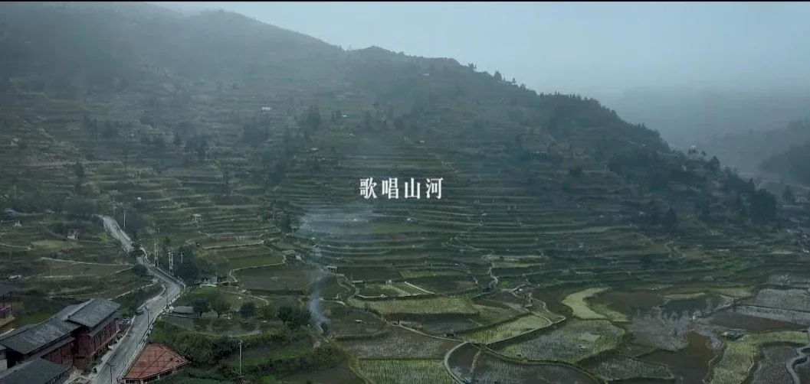
DOCUMENTARY · 03讲述侗族传统侗族大歌与日常生活。获第十五届蓝桥杯全国软件和信息技术专业人才大赛视觉艺术设计赛全国总决赛一等奖。
扫码可观看作品详情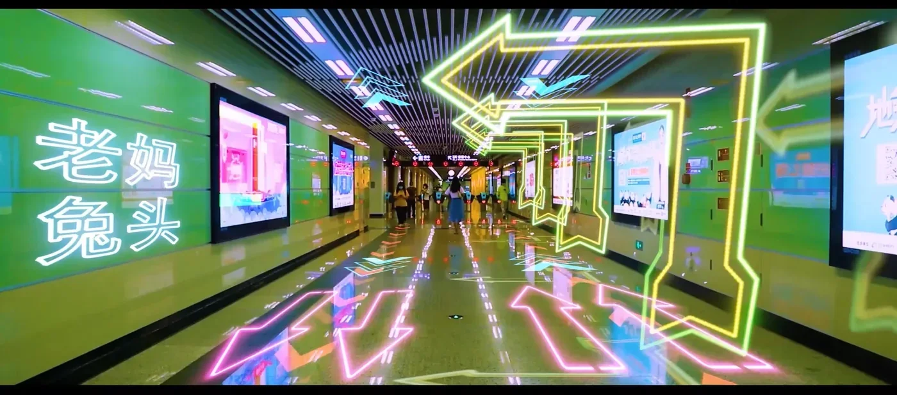
CREATIVE FILM · 04以成都为背景，将传统地标建筑与复古、现代元素结合，构想未来城市。获首届成渝杯数字媒体艺术作品大赛三等奖及第八届米兰设计周中国高校设计学科师生优秀作品展三等奖。
扫码可观看作品详情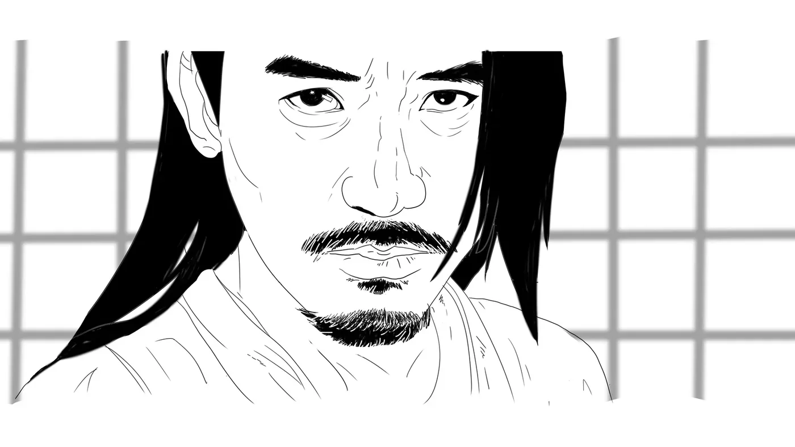
STORYBOARD个人参与分镜脚本创作，涵盖 MV、微电影及影视剧内容。
扫码可观看作品详情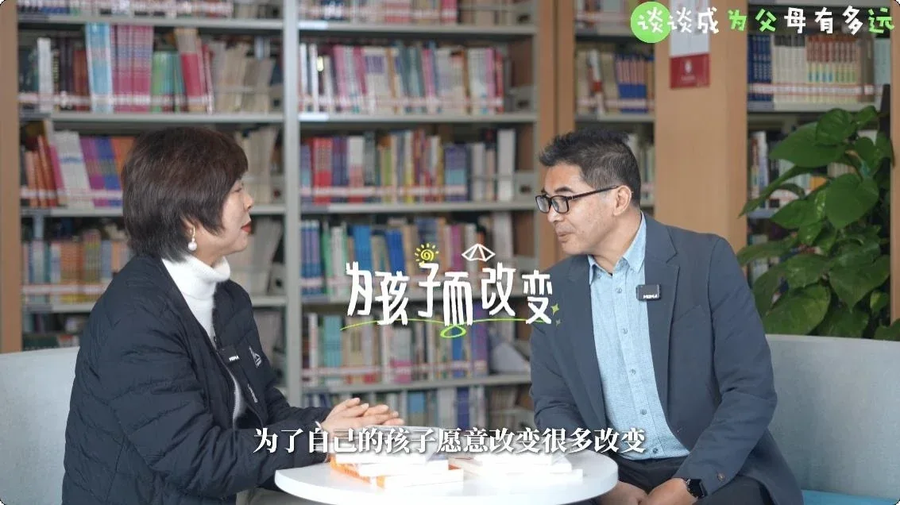
TV PROGRAM参与电视栏目策划与内容制作，将人物故事、现场采访和栏目视觉表达结合。
扫码可观看作品详情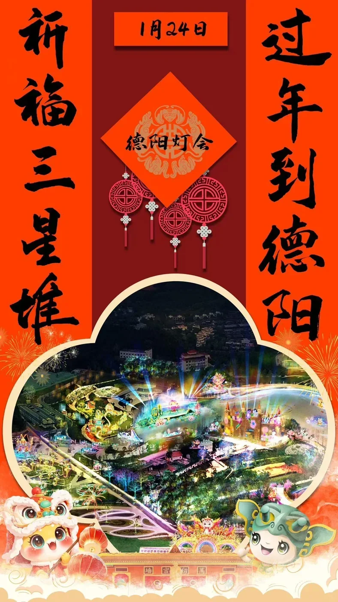
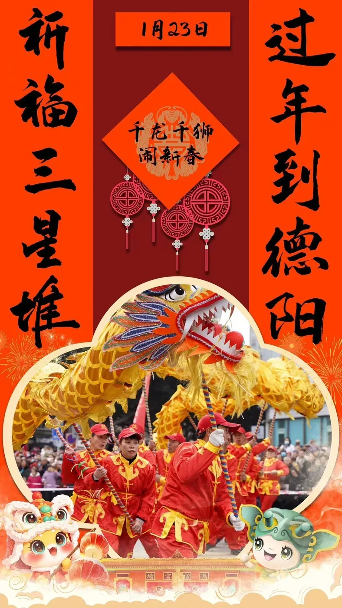
POSTER DESIGN围绕主题内容完成海报视觉设计，让故事信息与画面语言互相呼应。
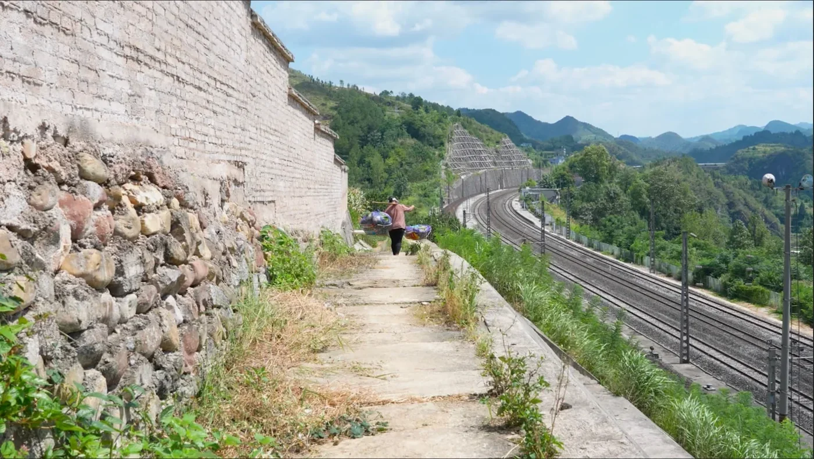
GRADUATION PROJECT毕业纪录片作品，围绕行驶于群山之间的绿皮火车展开，记录它所承载的日常与情感。
创作需要方法，也需要一点玩心。
下班之后
继续收集灵感
温柔、幽默，也提醒我理解彼此。
保留一点好奇，故事就不会结束。 ♡